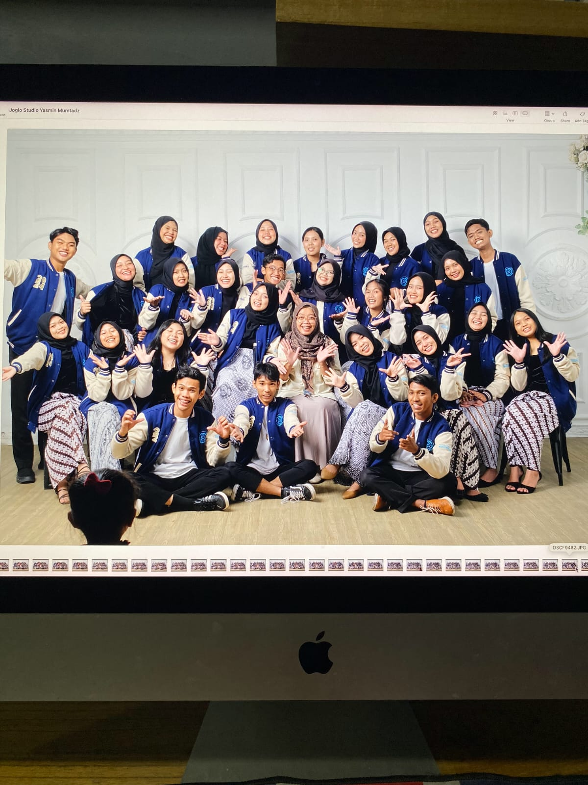
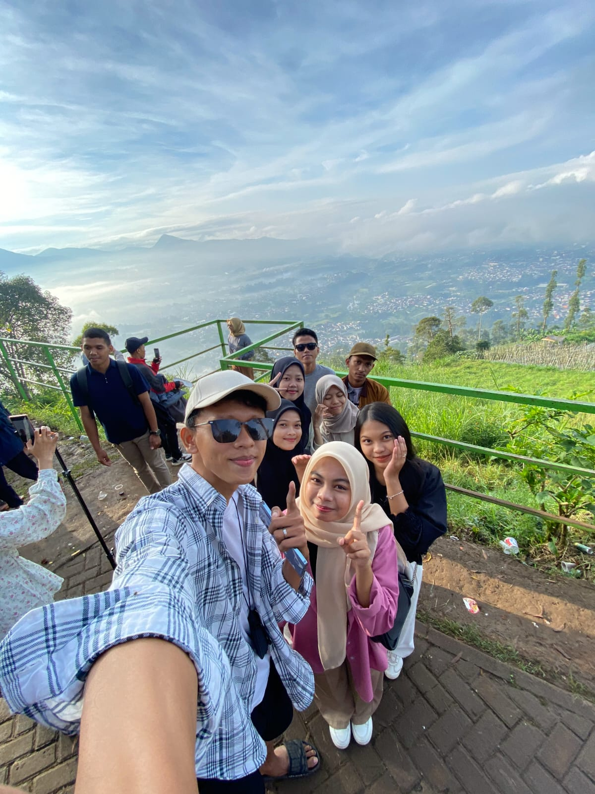

PMM Documentation




"Halo! Saya Muhammad Alfithra, mahasiswa Pendidikan Matematika semester 5 di Universitas Syiah Kuala. Dunia pendidikan bagi saya bukan sekadar ruang kelas, tetapi tempat di mana kreativitas dan inovasi bertemu. Saya percaya bahwa belajar dan mengajar bisa menjadi pengalaman yang inspiratif dan menyenangkan. Selama perkuliahan, saya terus mengeksplorasi cara-cara baru untuk memecahkan masalah, serta berusaha memahami lebih dalam tentang bagaimana pendidikan dapat membentuk masa depan. Dengan semangat yang tinggi, saya bertekad untuk menjadi bagian dari generasi pendidik yang menginspirasi—mendorong setiap siswa untuk berpikir kritis, kreatif, dan berani bermimpi besar." "
Selama satu semester penuh, saya mendapat kesempatan luar biasa untuk berkuliah di Universitas Sebelas Maret (UNS) melalui program pertukaran mahasiswa. Pengalaman ini sungguh berkesan dan sangat memperkaya! Di kampus UNS, saya tidak hanya terlibat dalam kegiatan akademik, tetapi juga merasakan kehidupan kampus yang penuh dinamika. Salah satu hal paling berharga adalah bertemu dan belajar bersama teman-teman dari berbagai penjuru Indonesia—masing-masing membawa latar belakang dan budaya yang berbeda. Pertemuan ini memberi saya wawasan baru tentang keberagaman yang ada di Indonesia, memperkuat rasa persatuan dalam keberagaman.
Read More
Mengikuti program MBKM USK Unggul di SMAN 1 Mutiara adalah pengalaman yang luar biasa. Selama menjalani program ini, saya mendapatkan banyak sekali pengalaman berharga yang tidak hanya memperluas pengetahuan saya, tetapi juga memberikan perspektif baru tentang kehidupan di dunia pendidikan. Mengajar langsung di sekolah memberi saya kesempatan untuk berinteraksi dengan siswa, memahami tantangan yang dihadapi para guru, dan belajar dari berbagai metode pengajaran yang mereka terapkan.


Filsuf
Kita memiliki dua telinga dan satu mulut sehingga kita dapat mendengarkan dua kali lebih banyak daripada berbicara

Revolusioner kemerdekaan Indonesia
Hidup yang tidak dipertaruhkan, tidak akan pernah dimenangkan

Ulama, Sastrawan
Salah satu pengerdilan terkejam dalam hidup adalah membiarkan pikiran yang cemerlang menjadi budak bagi tubuh yang malas, yang mendahulukan istirahat sebelum lelah

Pejuang kemerdekaan
Tujuan pendidikan yaitu mempertajam kecerdasan, memperkukuh kemauan, serta memperhalus perasaan